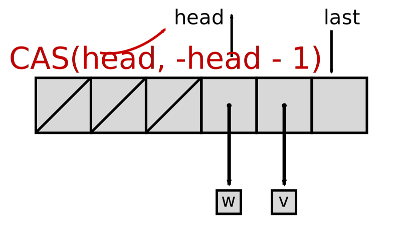
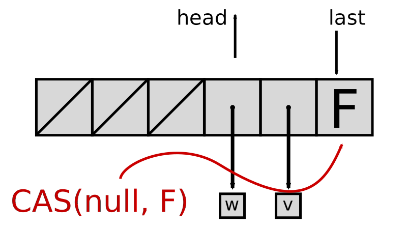
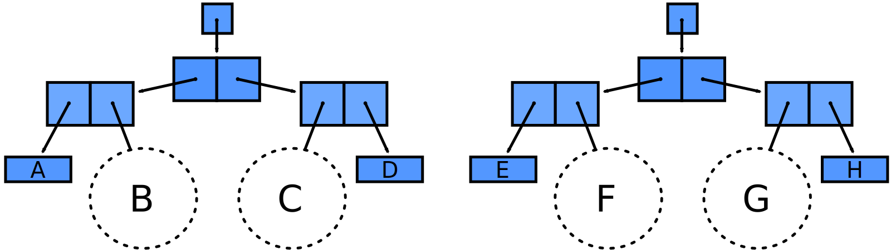
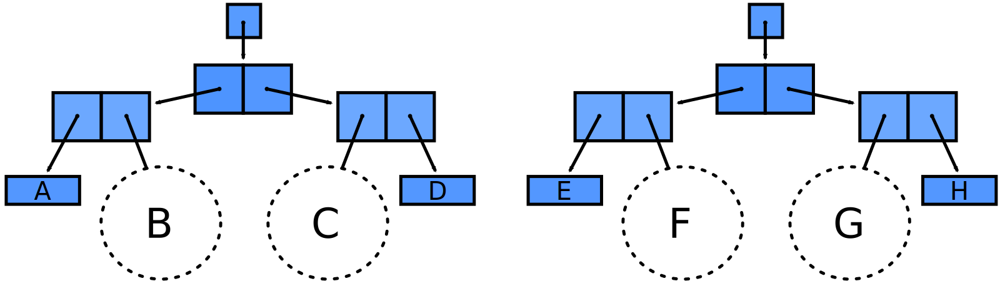
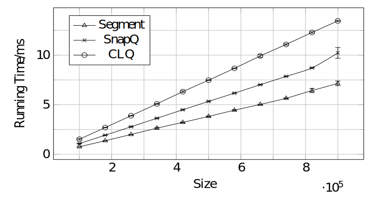
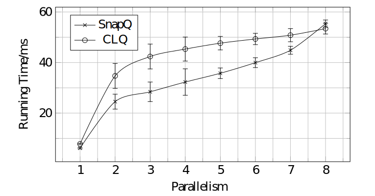
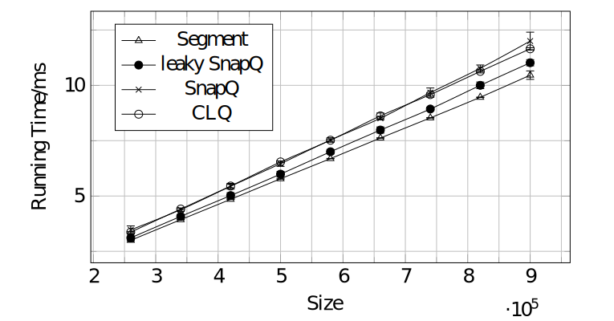

Conc-Tree
Data Structure for Functional and Parallel Programming
Aleksandar Prokopec / @alexprokopec

Single-Shot Queues
head- position of the first element in the queuelast- position less than or equal to the first empty entry
Single-Shot Queues - Enqueue


Single-Shot Queues - Dequeue


Correctness


- Every array entry is initially
null, then some element, and finally the special valueREMOVED - The numbers in
headincrease monotonically from 0 until the array length
Eventual Correctness


- Assuming no contention,
lasteventually points to the first empty entry (eventually fast) - Eventually, the reference to the removed element is released (eventual reclamation)
Single-Shot Queue Freeze Operation
 SnapQueue

SnapQueue Enqueue

SnapQueue Enqueue

Support data structure is any immutable data structure into which we can push single-shot queues.
The support data structure must be a sequence, i.e. it must retain order.
SnapQueue Dequeue
Dequeue must occasionally steal the support data structure from the enqueue (right) side.
SnapQueue Dequeue

SnapQueue Dequeue

Left support structure non-empty, no need to steal.
SnapQueue Dequeue

What about snapshots?
It's hard to get a consistent view of a fast-moving object...
...unless you can freeze it.
SnapQueue Freeze

How to atomically prevent subsequent enqueue and dequeue operations?
SnapQueue Freeze
SnapQueue Freeze

SnapQueue Freeze

SnapQueue Freeze

SnapQueue Freeze
The freeze operation is as good as a snapshot.
After a freeze, the previously mutable data structure becomes an immutable data structure.
SnapQueue Snapshot

SnapQueue Concatenation
 

SnapQueue Concatenation
If we can find an immutable data structure that:
- has efficient push-right and pop-left operations
- has efficient concatenation
Then we have an efficient lock-free concatenation operation.
SnapQueue Concatenation
Conc-Trees as the support data structure:
- O(1) pop-left and push-right
- O(log n) concatenation
More information in the paper.
Performance - 1 Thread Enqueue
 segment = single-shot queuePerformance - N Thread Enqueue
Performance - 1 Thread Dequeue
 segment = single-shot queuePerformance - N Thread Dequeue

Performance - Segment Length
 segment = single-shot queue
segment = single-shot queue